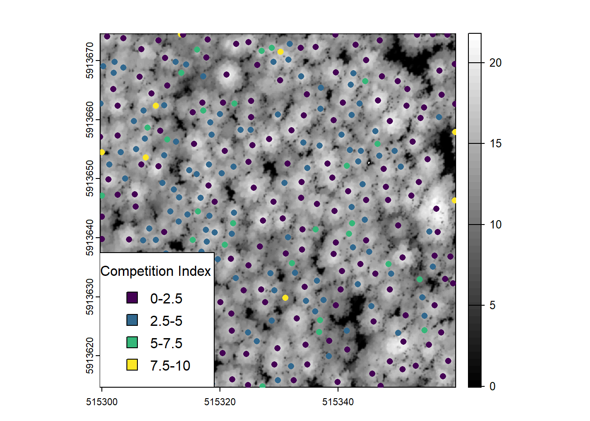

library(lidR)
library(dplyr)
library(sf)
library(terra)
library(siplab)
las <- readLAS('extdata/thin_plot_dec.laz')Demonstration of Competition Assessment Workflow
Assessing Competition with Lidar Data - Irwin et al. 2024
In this document we will provide a brief overview of the processing steps required to go from a raw point cloud to a competition layer.
1 - Normalized LAS point cloud
2 - Tree detection (lidR)
3 - Tree segmentation
4 - Computation of crown volume
5 - Computation of competition indicies
Tree Detection and Segmentation
In this section we will start with a normalized lidar point cloud collected over a coniferous managed forest stand. In this stand managers have desire to perform thinning but require a spatially explicit layer describing the competitive distribution of trees. Using this layer they can target areas with relatively high competition for thinning.
First we will detect and segment tree crowns (lidRbook/itd-its)
We will start by loading relevant packages and an example L1 lidar dataset; clipped from the Irwin et al. 2024 data
- To speed up computation in this example the data has been thinned from the original density (~1200 pts/m2) using a 25cm voxel retaining 1 random point, resulting in a density of (173 points/m2).

First we will generate a canopy height model, smooth it, then detect tree tops, and finally segment tree crowns
Canopy Height Model Generation
# Generate Canopy Height Model (CHM) with lidR
chm <- lidR::rasterize_canopy(las, res = 0.1, p2r(subcircle = 0.075))
# Gaussian smoothing function
fgauss <- function(sigma, n = ws) {
m <- matrix(ncol = n, nrow = n)
col <- rep(1:n, n)
row <- rep(1:n, each = n)
x <- col - ceiling(n/2)
y <- row - ceiling(n/2)
m[cbind(row, col)] <- 1/(2 * pi * sigma^2) * exp (-(x^2 + y^2)/(2 * sigma^2))
m/sum(m)
}
# Apply Gaussian smoothing with terra::focal
chm <- terra::focal(chm, w = fgauss(1, n = 5), na.rm = T)
# Plot smoothed CHM
plot(chm, col = viridis::viridis(50))
Tree top detection
# Locate tree tops on smoothed CHM with 2m maxima finding window
ttops <- locate_trees(chm, algorithm = lmf(ws = 2, shape = "circular"))
# Plot smoothed CHM with detected local maxima overlaid
plot(chm, col = viridis::viridis(50))
plot(st_geometry(ttops), add = T, pch = 3, col = 'red', cex = 0.5)
Tree crown segmentation
Functions
# Base watershed segmentation (requires EBimage)
mcwatershed <-function(chm, treetops, th_tree = 2, tree_id = "treeID")
{
f = function(bbox)
{
if (!missing(bbox)) chm <- terra::crop(chm, bbox)
# Convert the CHM to a matrix
Canopy <- terra::as.matrix(chm, wide = TRUE)
mask <- Canopy < th_tree | is.na(Canopy)
Canopy[mask] <- 0
cells <- terra::cellFromXY(chm, sf::st_coordinates(treetops)[, c(1, 2)])
ids <- dplyr::pull(treetops, tree_id)
seeds = chm
seeds[] = 0L
seeds[cells] = ids
treetops = terra::as.matrix(seeds, wide = TRUE)
Canopy <- Canopy/max(Canopy)
Canopy <- imager::as.cimg(Canopy)
treetops <- imager::as.cimg(treetops)
Crowns <- imager::watershed(treetops, Canopy)
Crowns <- Crowns[,,1,1]
Crowns[mask] <- NA_integer_
out <- terra::setValues(chm, Crowns)
return(out)
}
f <- lidR::plugin_its(f, raster_based = TRUE)
return(f)
}Modified Height Limited approach This approach attempts to limit watershed crown segmentations using a canopy height pixel threshold parameter that is multiplied by the tree height; in this sense a 10 m tall tree could not contain pixels less than 7 m in height. This approach is useful in dense closed canopy stands to reduce oversegmentation.
# Height limited watershed segmentation function
crown_mask <- function(chunk, ttops = NULL, chm_res = 0.25, crown_height_threshold = 0.7, hmin = 2){
# Check that 'chunk' is not missing or NULL
if (is.null(chunk) || missing(chunk)) {
stop("Error: 'chunk' argument must be specified.")
}
# Check if input is a SpatRaster object
if("SpatRaster" == class(chunk)){
chm <- chunk
chm_res <- terra::res(chm)[1]
print('Input is SpatRaster (Presuming CHM) proceeding with crown segmentation')
} else{
# Check if input is a las file
if("LAS" %in% class(chunk)){
las <- chunk
print('Input is las file proceeding with crown segmentation')
}
else{
# Check if input is a las catalog chunk
las <- lidR::readLAS(chunk)
if (lidR::is.empty(las)) {
return(NULL)
}
print('Input is catalog tile proceeding with crown segmentation')
}
# Generate canopy height
chm <- lidR::rasterize_canopy(las, res = chm_res , lidR::p2r(na.fill = lidR::knnidw()))
}
# Initial crown segmentation
crowns <- mcwatershed(chm, ttops, th_tree = hmin, tree_id = 'treeID')()
# Replace crown IDs with maximum canopy height within crown
crowns_max <- terra::classify(x = crowns,
rcl = as.data.frame(terra::zonal(chm,
crowns,
fun = 'max')))
# Make CHM mask raster where height is less than threshold percent
chm_mask <- chm
chm_mask[chm_mask < (crown_height_threshold * crowns_max)] = NA
# Re-run segmentation on masked CHM
crowns_masked <- mcwatershed(chm_mask, ttops, th_tree = hmin, tree_id = 'treeID')()
return(crowns_masked)
}Fill Segmentations and keep largest crown polygon This function is used to clean up the holes in segmentations resulting from the height limited approach, and to take the resulting largest polygon that is assumed to be the tree crown.
# Keep and fill largest crown polygon for each tree
convert_multi_to_single_polygons <- function(polygons, fill_holes = TRUE){
tictoc::tic()
if(!"MULTIPOLYGON" %in% unique(sf::st_geometry_type(polygons))){
print('ERROR: Input sf polygon df contained zero MUTLIPOLYGONS; conversion not neccessary')
stop()
}
# Seperate out multipolygons
mp <- polygons %>% dplyr::filter(sf::st_geometry_type(polygons) == 'MULTIPOLYGON')
# Seperate out polygons
sp <- polygons %>% dplyr::filter(sf::st_geometry_type(polygons) == 'POLYGON')
largest_polygon <- function(x, Z) {
# Turn multipolygon into vector of single polygons
x <- sf::st_combine(x)
x <- sf::st_cast(x, "POLYGON")
# Calculate area of each single polygon
areas <- sf::st_area(x)
# Take largest polygon
max_area_index <- which.max(areas)
# Re-add the attribute column
largest <- x[max_area_index] %>% sf::st_as_sf(crs = sf::st_crs(x))
# Re-name geometry column
sf::st_geometry(largest) <- 'geometry'
largest <- cbind(largest, Z) %>% dplyr::relocate(geometry, .after = tidyselect::last_col())
if(fill_holes){
# Fill any holes in the resulting polygon
largest <- nngeo::st_remove_holes(largest)
}
return(largest)
}
# Go through multipolygons and apply largest_polygon function
# Empty list for fixed polygons
p_polygons <- list()
# Progress bar
pb <- progress::progress_bar$new(total = nrow(mp))
print('Taking largest polygon of each MULTIPOLYGON crown')
for (i in 1:nrow(mp)) {
p_polygons[[i]] <- largest_polygon(sf::st_geometry(mp[i,]), Z = sf::st_drop_geometry(mp[i,]))
pb$tick()
}
# Bind list of corrected polygons
print(glue::glue('Binding together {length(p_polygons)} cleaned polygons'))
p_polygons <- do.call(rbind, p_polygons)
sf::st_crs(p_polygons) <- sf::st_crs(polygons)
if(fill_holes == TRUE & nrow(sp) > 0){
# Fill holes in single polygon polygons
sp <- nngeo::st_remove_holes(sp)
}
# Re-join all polygons together
polygons <- rbind(sp, p_polygons)
print(glue::glue('Finished cleaning {nrow(polygons)} polygons'))
tictoc::toc()
return(polygons)
}
Apply treeID values from segmented tree crowns to point cloud
Functions
Compute alphashape of a clipped lidar point cloud
This function takes an input individual tree lidar point cloud and computes and alpha shape using the alphashape3d package. To do so first any segmentation with less than 3 points are discarded (in practice there are few or none). Second the X, Y, and Z coordinates are normalized to be locally referenced. Next several metrics including the volume of the hull are calculated.
The following is a lidR compatible function to compute these metrics across large areas. To apply this across large lidar tiles where treeIDs have been attributed to each relevant point we create this wrapper function that applies the above function across each tree ID.
# Merge Crown ID with las point cloud
tree_las <- lidR::merge_spatial(las, crowns, attribute = 'treeID')
# Add treeID attribute to las
tree_las = add_lasattribute(tree_las, name = "treeID", desc = "ID of a tree")
# Filter out non tree points to speed up computation
tree_las <- filter_poi(tree_las, !is.na(treeID))
# Plot resulting point cloud coloured by treeID
plot(tree_las, color = 'treeID')
Generate 3D alphashape and calculate convex/concave hull (crown) volume for each tree
# Filter out points for one tree (example)
tree <- filter_poi(tree_las, treeID == 147)
# Calculate alphashape for tree
ashape <- get_crown_attributes(tree@data$X,
tree@data$Y,
tree@data$Z,
export_ashape = TRUE)
# Extract individual X,Y,Z points (for plotting)
a3d <- ashape[[3]]
# Extract alphashape object (for plotting)
ashape <- ashape[[2]]
# Plot Raw Point Cloud
plot(tree, bg = 'white', size = 6)
# Plot concave hull (alpha = 1)
plot(ashape, indexAlpha = 1, transparency = 0.3, axes = TRUE)
points3d(a3d, color = 'black')
# Plot convex hull (alpha = Inf)
plot(ashape, indexAlpha = 2, transparency = 0.4, axes = TRUE)
points3d(a3d, color = 'black')
# Decimate density heavily to speed up alphashape computation in example
tree_las_dec <- decimate_points(tree_las, random_per_voxel(res = 0.5, n = 1))
ashape_mets <- get_alphashape_metrics(tree_las)[1] "Individual LAS object input into function"
Beginning crown metric generation for chunkCalculate Competition Index based on Crown Volume Values

Functions
Calculate Heygi 1974 Pairwise Index with sf point objects (tree tops) This function will be used to take the detected tree tops from lidR (an sf point obect), convert them to a spatstat compatiable point pattern (ppp) object, and finally performing the pairwise competition index using the siplap package to compute the index.
Here we will take the function and apply it to the tree tops attributed with concave_hull volume from their associated point cloud. We will finish by plotting the result (filtered/binned to emphasize differences in index values).
Calculated Heygi style competition for 335 trees assesing their vol_concave within a 6m radius
1.06 sec elapsed